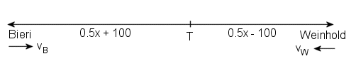

Lösung PUZZLE 24: Wie weit ist es vom "Löwen" zum "Bären" ?

Vom "Löwen" zum "Bären" ist es genau 1000 Meter weit
Beweis:
Die Strecke vom "Löwen" zum "Bären" messe x Meter. Die Geschwindigkeit von Bieri sei vB Meter pro
Minute, diejenige von Weinhold sei vW Meter pro Minute.
In derselben Zeit t legt dann Bieri bis zum Treffpunkt T (0.5x + 100) Meter, Weinhold (0.5x - 100) Meter
zurück.
Es gelten also die zwei Gleichungen:
(1) vB * t = 0.5x + 100
(2) vW * t = 0.5x - 100
Nach dem Treffpunkt legt Bieri die Strecke der Länge (0.5x - 100) Meter mit Geschwindigkeit 0.5vB in 8
Minuten, Weinhold die Strecke (0.5x + 100) Meter mit Geschwindigkeit 0.5vW in 18 Minuten zurück. Also gilt:
(3) 0.5vB * 8 = 0.5x - 100
(4) 0.5vW * 18 = 0.5x + 100
Dividiert man (1) durch (2) (t und vW > 0), so erhält man dasselbe Resultat wie bei der Division von (4) durch (3):
(5) vB / vW = (0.5x + 100) / (0.5x - 100) = 9vW / 4vB
Also gilt
4vB2 = 9vW2
Zieht man die Wurzel (Betrag unnötig, da die Geschwindigkeiten positiv sein müssen), so folgt:
2vB = 3vW
Setzt man dieses Resultat in Gleichung (5) ein und multipliziert mit 2, so gilt:
3vW / vW = (x + 200) / (0.5x - 100)
vW lässt sich wegkürzen und die Auflösung der entstandenen Gleichung ergibt: x = 1000